Given a triangle  , we can write any planar point 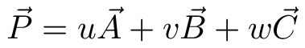 where
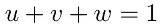
, we can write any planar point 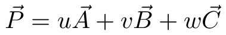 where
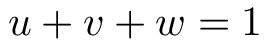
Furthermore:
Where 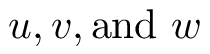 are the ratios of the signed areas
Proof
We'll prove this for a triangle, but a similar proof generalizes for a simplex of any dimension
We can subtract  from both sides to get 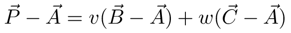
which treats as the origin and highlights that we only have two degrees of freedom. So to simplify:
from both sides to get 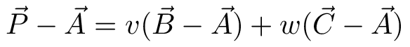
which treats as the origin and highlights that we only have two degrees of freedom. So to simplify:
Which gives 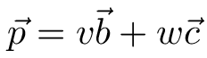 and can be written in matrix form
This can be solved using Cramer's rule:
But recall that each determinant is the signed area of the parallelogram spanned by its column vectors and so
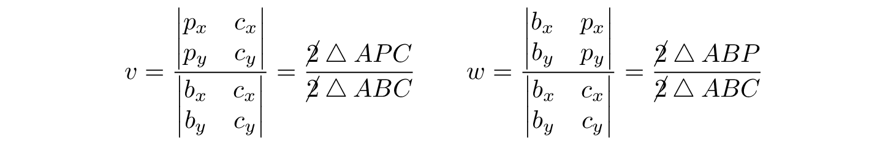
To show that 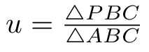 consider that given any non-degenerate triangle and a fixed planar point  we can compute the signed area: 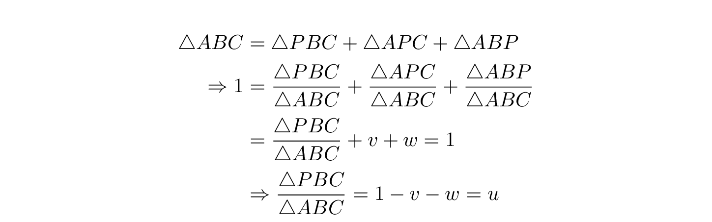
we can compute the signed area: 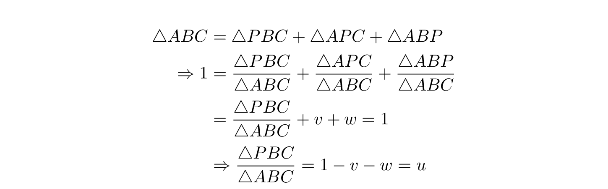